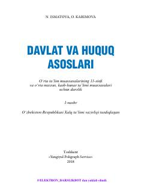

1D11-sinf o'quvchilari uchun davlat va huquq asoslari fanidan rasmiy darslik.
Mazkur darslik o'rta ta'lim muassasalarining 11-sinf o'quvchilari uchun mo'ljallangan bo'lib, davlat va huquq asoslari, O'zbekiston Respublikasining Konstitutsiyasi hamda inson huquqlarini ta'minlash mexanizmlarini o'rgatadi. Kitobda huquqiy ong va madaniyatni yuksaltirishga qaratilgan nazariy bilimlar, savol-topshiriqlar va huquqiy masalalar keltirilgan.